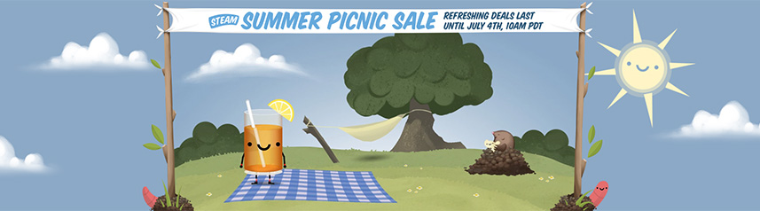

Esse site tem o objetivo de demonstrar um pouco do programa Steam, uma plataforma de jogos, demos e outros programas mundialmente conhecida e elogiada. Sinta-se livre para explorar o website se quiser conhecer um pouco mais da história, jogos populares, curiosidades e funções do programa.
A Steam é um software de gestão de direitos autorais criado pela Valve e é reconhecida como a maior plataforma de jogos do mundo. Em seu acervo ela conta com cerca de 9000 jogos em seu acervo, além de diversos softwares de programação. Ela conta em média com 8,5 milhões de contas conectadas por dia. A steam é conhecida também por possuir diversos jogos autorais como Half Life, Dota, Counter Stike, Portal, dentre outros. Veja o trailer do último jogo da saga portal lançado, o Portal 2.
Quando foi criada, a proposta de vender games de forma legal e integrada era algo revolucionário, mas tornou-se com o tempo algo extremamente necessário para aqueles que preferem jogar no computador. Os preços dos jogos costumam ser muito mais baratos do que as verões em mídia física para outras plataformas. Atualmente o grande diferencial da Steam em relação a outras plataformas é sua incrivel comunidade e seu modo família, tornando a experiência de jogar muito mais divertidada e unida , além é claro de movimentar um mercado de venda e troca de itens online. Outro destaque importante são suas grandes promoções que ocorrem principalmente em datas comemorativas e normalmente contam com preços brutalmente acessiveis.
